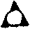

聚雲吹萬真禪師語錄卷中
普說
參禪一法貴要真參實悟切不可將雜毒蘊在胸中何謂雜毒聻無明煩惱五陰六入十二處十八界此是欲界有情雜毒喜樂捨無心定無想定此是色界有情雜毒空處定識處定無所有處定非非想處定滅盡定此是無色界有情雜毒見惑八十八使思惑八十一品此是聲聞羅漢雜毒三增進法十信十住十行十迴向四加行此是權小菩薩雜毒歡喜地乃至遠行不動法雲能以一身變現一切色身得身自在能以一心現一切處說法得心自在此是十地菩薩雜毒如來逆流如是菩薩順行而至覺際入交過金剛喻定便能應現無礙此是等妙二覺雜毒以圓方覺覺無不圓以覺規圓圓無不覺無一時不圓無一處不覺此是圓覺菩薩雜毒一為無量無量為一小中現大大中現小一毛端現寶王剎坐微塵裡轉大法輪此是三世諸佛雜毒拈椎豎拂行棒行喝瞬目揚眉輥毬舞笏拈古頌古評古別古此是諸大祖師雜毒大眾我問汝等昔在母胎中六根未開知覺未動此是未生已前看此中還具許多般也無及至[囗@力]地一聲睜眼即見見無分別張耳即聞聞無分別鼻裡有氣嗅無分別口啣血塊味無分別手捏拳頭觸無分別見母不識母見父不識父意無分別此是初生一著看此中還有許多般也無長至三五七歲十三四歲三細並顯六粗齊成如蠶作繭自纏其身如蛾赴燈自燒其體反以不常為常不樂為樂非我為我非淨為淨竟成四倒執為我見復有厭苦欣樂者趣為涅槃擔著四正勤五根五力七菩提八聖道十八不共法三十七助道品又背真常為無常真樂為不樂真我為無我真淨為不淨湊成八倒執為法見所以佛言一切眾生具有如來智慧德相秖因妄想執著而不見得及達磨航海而來不立文字直指人心見性成佛乃至淨智妙圓體自空寂八箇字如一燈然百千燈明明無盡何謂體自空寂聻向未生已前六根未開知覺未動處薦取何謂淨智妙圓聻向初生時見聞覺知全無分別處薦取今日新戒入山惹得老僧挑出許多葛藤卻也當得入山拄杖子再與一箇方兒兩耳擔柴兩眼挑水腳板喫飯眉毛踢起有人問你作甚麼漫說道冷灰裡曾爆豆子。
普說大慧禪師說盡人間禪病此是三峰和尚語然禪本無病因學人錯立知見妄自推排古人目之為病如打地和尚凡見僧來問話便打地後有人私竊其杖令僧向前問話地惟張口何嘗有病百丈禪師謂眾曰汝等與我開義田我為汝等說佛法及至開田畢大眾向前求說佛法百丈展手何嘗有病高亭隔江見德山山招手高亭直趨而過何嘗有病秖這三則公案雖出尋常卻也深險若謂張口展手是佛法遍大地人俱在張口展手為甚麼不是若謂張口展手不是佛法如何令諸方學人悟去這裡參來參去將謂張口處是佛性展手處是妙心纔有個認性認心底念頭便落識神一切禪病生矣長沙和尚曰學道之人不識真秖為從前認識神無量劫來生死本癡人喚作本來人便是這個說話。
普說師據座首座代參頭請問法要師云江遊船子釣樹唱柳堤鶯春融三日雨晚照一溪雲此是法要不是法要座云白雲騎鶴鳥啣風師云從來達岸者不必問津梁座歸眾師乃云坐參一法先以打斷葛藤頓斷血筋為最義日用二六時中若有纖毫不如意事關於耳目則身心不得潔淨工夫不得親切又與未坐參者一般倘能提起話頭如銀山鐵壁處處木馬遊春在在石人觀戲似將一個硬石頭壘在胸中行也如是坐也如是動也如是靜也如是美也如是惡也如是他日洗面摸著鼻孔行路踢著指頭喫飯觸著缽盂伸手穿著袈裟硬石頭嚗地一下七花八裂也怪老僧不得。
小參
做工夫猶如喪卻生身父母行也思坐也思又如負卻許多錢債行也愁坐也愁又如一人與萬人戰不容眨眼又如墮入千尺井中單單只求出井所以道一念萬年去寒灰枯木去一條白練去此正為學人下個做工夫底註腳昔有觀桃花而悟者有聞擊竹而悟者有觸翻溺器而悟者總是念念逼拶忽然行到滑石頭上嚗地斷碎地折便爾七通八達去也時節到來妙理自彰。
小參僧問趙州狗子還有佛性也無州云無這無字如惡龍出洞疾風暴雨轟雷掣電無論山石叢林一水拖盡到這裡始會得萬法歸一一歸何處本來面目現現成成若是純任狂慧一向與無明撕結他時惡龍有分既然如是何不早在聚雲寺裡變個惡龍從自己四大色身中發起疾風暴雨轟雷掣電將無始以來習氣窩無明窟人我山煩惱礦現前理障事障佛見法見一齊拖盡成一個空空洞洞底物事好喫老僧一頓拄杖子。
小參祖師門庭魔來殺魔佛來殺佛若起佛見法見文殊墮入鐵圍山何以故只為諸人昧卻平常心地著於奇特妄想纔聽說個三身四智五眼六通菩提涅槃真如佛性一個個聚頭商量胡思亂度以為上上奇特事正如世人差愛異言異服一般若是說個饑來喫飯困來打睡冷來穿衣熱來揮扇便爾錯過去也試看古人問如何是西來大意庭前柏樹子何嘗奇特如何是本身盧舍那與我過淨瓶來何嘗奇特如何是善知識燈籠露柱貓兒狗子何嘗奇特奇特且置直今喚甚麼作平常心地良久云每日起來七件事柴米油鹽醬醋茶。
小參學人做工夫參話頭先從這一副臭皮袋上痛劄一過你看髮毛爪齒皮膚筋骨是地性涕唾精津血液涎沫是水性煖氣是火性動轉是風性四大分張只今做工夫參話頭的又在何處安身立命若在這裡參窮之極忽然見得如世小兒藏蒙相似即云在這裡師復作貓一聲。
小參師云看箭以拂子東指云這一箭射透十方世界一切眾生性靈只令山頭翻巨浪海底熱烽煙枯木口喃喃髑髏淚潸潸以拂子西指云這一箭射斷十方世界一切眾生命根只令撒手墮懸巖吐舌如匾檐打碎頻伽瓶扯斷紅絲線以拂子上指云這一箭射開十方世界一切眾生慧眼只令頂門光亞豎驀直走金蛇百千手臂百千執萬億毫端萬億花此是涅槃經上三點老僧用作三箭卻也當箭即當即箭不曾是釋迦眉毛在下衲僧鼻孔掉轉僧問射斷命根後如何師云斬釘截鐵進云如何是鼻孔掉轉師云斑竹筒。
小參末法時代去聖遠矣所出法門苗裔多務馳逐蕩喪己靈縱有參禪慕道者亦各任性擔板墮入狂慧執著之見每見棒喝堂中有順朱填墨者矣棒喝室裡有敲關擊節者耶臨濟云大凡演唱宗乘一語中須具三玄門一玄門須具三要有權有實有照有用汝等諸人作麼生會復以四喝四賓主四料揀重重顯示況復曹洞之三滲漏五君臣五王子彼雖出自青原最初同一心宗既會得臨濟宗旨必會得溈仰雲門法眼三宗三宗既會則曹洞之宗當會矣天目中峰有五家之評謂溈仰嚴謹曹洞細密臨濟痛快雲門高古法眼簡明然五者果可缺一乎用痛快以絕狐窠使學人遊於細密而嚴謹居處自然高古發藥自然簡明何不可之有哉今也不然且言飲酒食肉無非宗旨持戒習定俱成繫縛長髮彩衣高歌談笑謂為出格標榜吾是以痛哭也流涕也長太息者也諸仁者寧可不作佛不作祖斷不可不具三無漏學以趨百尺之竿頭以究五宗之玄旨也。
小參大凡學人請益問處真實方見答處的當若問答相違則聾瞽不相入矣不見雲門大師出語高古不墮常流後至曹洞門庭循規蹈矩細細討論正見他法海神龍能大能小能昇能隱纔顯出老作家手段到乾峰峰示眾云法身有三種病二種光須是一一透得更須知有向上一竅門出眾云秖如庵內人為甚不知庵外事峰呵呵大笑門云猶是某甲疑處峰云你是甚麼心行門云也要和尚相委峰云直須恁麼始得穩坐地門云喏喏到曹山山示眾云諸方盡把格則何不與他道卻令他不疑去門出眾云密密處為甚麼不知有山云秖為密密所以不知有門云此人如何親近山云莫向密密處親近門云不向密密處親近時如何山云始解親近門云喏喏到疏山山上堂云病僧咸通年前會得法身邊事咸通年後會得法身向上事門出眾云如何是法身邊事山云枯樁門云如何是法身向上事山云非枯樁門云還許學人說道理也無山云許門云和尚道枯樁豈不是法身邊事山云是門云道非枯樁豈不是法身向上事山云是門云秖如法身還該一切也無山云法身周遍豈得不該門指淨瓶云秖如淨瓶還該法身也無山云闍黎莫向淨瓶邊覓門禮拜直這三段因緣一一透得可為萬世法程見地行履無不具足若有個旁不肯底道和尚喫了常住飯為甚打別人葛藤但向道病多諳藥性得效敢傳方。
小參不道無禪只是無師師勝資強古有明鑑昔者大慧禪師初參奉聖初問云承和尚有言金蓮從地湧寶蓋自天垂為是神通妙用為是法爾如然初云金蓮從地湧寶蓋自天垂慧云鸞鳳不栖荊棘樹燕雛猶戀舊時巢初云多年不見你有許多說話慧云只如適纔僧問昔日世尊今日和尚又作麼生初喝一喝慧云這一喝未有主在初取拄杖稍遲慧云掣電之機徒勞佇思拂袖歸眾據他這些作略已是慣排陣勢臨陣不怯底手段後參湛堂準準云你今日為甚麼鼻孔無半邊慧云寶峰門下準云杜撰禪和一日侍準入鄉村準指王十官人問曰此官人貴姓慧云姓梁準以手抹額曰怎奈姓梁底少個襆頭慧云襆頭雖無鼻孔彷彿準云杜撰禪和乃歸僧堂看經準問云看甚麼經慧云金剛經準云是法平等無有高下為甚麼雲居山高寶峰山低慧云是法平等無有高下準云你到做得座主使下秪這三劄從前臨陣慣敵底鎗刀器械都不見了又參圜悟悟令下東山水上行底語連下四十九轉不契一日圜悟在天寧上堂舉僧問雲門如何是諸佛出身處門云東山水上行若是天寧則不然設有僧問如何是諸佛出身處但向他道薰風自南來殿閣生微涼慧於座下始有悟入自謂暢快平生悟見而謂曰也不意你到這箇田地可惜死了不曾活得不疑言句是為大病不見道懸巖撒手自肯承當絕後再甦欺君不得又令參有句無句底公案苦參不入問悟曰和尚昔曾請益師翁來師翁有語不妨拈出悟曰老僧曾問先師有句無句如藤倚樹時如何先師云描也描不成畫也畫不就又問樹倒藤枯句歸何處先師云相隨來也慧於此方得徹悟遂舉淆訛公案答無滯礙大眾你看此老若不遇湛堂圜悟兩員真宗匠早已墮入野狐隊裡要且是他虛心受鍊實領鉗錘纔得如是透脫所以語有真語有實語有相似語有合頭語量有現量有比量見有了了見有相貌見果能透得這些關節始可喚作真正師真正禪莫只學個名字禪和子口口吐出野狐涎將來有甚麼用所以古人道參須實參悟須實悟閻羅大王不怕多語。
示眾
示眾當日釋迦初出母胎即云天上天下唯吾獨尊只這句子你看他是持戒習講學來底是打坐修定參公案學來底正是未生前帶來底習氣雖後離王宮住雪山轉法輪又是開眼作夢何故秖因四生六道一向在被單窩裡生去死來貴去賤來貧去富來苦去樂來頭出頭沒無有了期他也堪忍不過設了如許方便插入被單裡搖醒幾個眾生罷休不然苦苦耽著能仁擔子作甚麼後來許多沒筋骨底不知如許方便原是止啼黃葉教人借路還家套子有入毘尼庵去者穿著一領鐵布衫頸項也不肯掉有入講經堂去者噇酒糟飽餖飣塞傷肚子縱有扁鵲良醫也救他不得有入壁觀婆羅門腳跡邊去者無論乾屎橛麻三斤爛東瓜破沙盆挑上一擔處處指東畫西胡喝亂喝道我是佛祖兒孫仔細檢點將來也只是些依樣畫葫底寫匠那曾摸著釋迦如來最初一句底樣子可憐生千百年後秖遇個老雲門欲將一棒打殺此正見報恩原是知恩人咦钁頭在手非多事運用還因路不平。
示眾盜跖直解殺人放火抄州掠縣究其本事無過一強下客偷裘出獄假雞竊關奪去物事主人猶自不知此是下客最奇妙處今之禪者若得盜跖一法秖可施設門庭若得下客一法閉門造車出門合轍全提家風切勿草草。
示眾近來參禪者未得真參實悟所以不能一念知非當下解脫都是昏沉散亂攪作一團皆由生死二字不切縱入稠林廣眾隨類而參到底學成五花禪高帽子禪當門抵戶禪卻與積錫錠者買賣一般及至生死到來業識茫茫無本可據何為五花聻若見古人好偈頌好機緣好語句秖管記些食生物而不化被人問著驢頭不鬥馬嘴亂統幾句何為高帽子聻或得一橛或見一隅便爾高談闊論眼底空人身子不過三尺強要出人頭地若論實際理地全沒交涉何為當門抵戶聻學得一棒一喝打得個圓相直候語到岐路上疑信不分迷悟不覺時將來一抵抵住也得個撐持家道底法子好則好只是閻羅大王不要你這些造作善惡兩部不上你這些語句牛頭夜叉不懼你這些棍棒但願大眾參個無依倚底禪透出這些絡索通身不犯直到臘月三十日自在逍遙去來無礙好不快活好不穩當。
示眾萬頃波中一片石立定腳跟赤骨歷縱橫無礙百千般都緣應化非真實大凡善知識語默動靜他在塵波欲浪裡轉大法輪腳跟下自有落處學人不曉遇喜認作喜遇悲認作悲遇嗔認作嗔遇愛認作愛譬如一水天人羅鬼各見有異問取性空真處何曾得個水火琉璃鎗刀來古人道登山登絕頂望眾山而自遠矣然大小丘垤卻走他眼光不過若一向在山下計較卜度則是跛者欲與漁者鬥事且未行而口過怨聲已招矣慎之慎之。
示眾一翳在眼亂墜空花一物在心橫森煩惱論凡論聖盡作礙眼之塵說佛說生總是蒙心之被然眼本自淨何曾有翳觀華卻不知翳即是眼心本自清未嘗觸物生惱殊莫識物即是心若能即物即心眼翳遍圓通之路如或即翳即眼心物開普照之門凡夫身出聖人心聖人體即凡夫用了無別矣諸佛相出眾生範眾生幻現諸佛真復何異哉打破這個關頭庶幾略較些子。
示眾爛羊頭關內侯貂不足狗尾續此譏世諦濫受官爵之語今之禪宗有等旋蒸熱賣者但要學得一棒叫得一喝語句下打得個之遶便爾付拂子寫源流也不管宗旨明與不明頭尾正與不正可憐生且不從上亦有將就做底祖師耶亦有半斗絲之和尚耶古人道見與師齊減師半德見過於師方堪傳受此語將來何用前百丈錯答一轉語墮野狐五百生比丘道眼不明虛消信施償為後園木耳黑臉老子不徇人情未得謂得未證謂證於己何益但願諸仁者勿貪眼前名聞結下未來酸苦寧效無法嗣之睦州不出頭之清素管教佛祖命脈光大無涯切不可爛羊續狗取笑諸方累人累己。
示眾古人道末後一句始到牢關把斷要津不通凡聖秖這一句子若也會得是甚麼弄猢猻底家具遣鬼神底茶飯出門遇彌勒入門遇釋迦如或未然三生六十劫十萬八千年也只是夢中說夢。
示眾五蘊山頭有一片放光石從眼門放光照見山河大地從耳門放光采聽一切音響從鼻門放光能聞一切香臭從齒門放光談說一切語言只是被無明執著二種籠絡雖在光天化日之下猶處黑暗不自覺知若有個智慧底人善將此石鐫作一尊古佛不但觀音勢至文殊普賢齊來唱和即過去莊嚴現在仁賢未來星宿三世諸佛同聲讚揚汝等若於行時無無明無執著便鐫一尊行佛於住時無無明無執著便鐫一尊住佛於坐時無無明無執著便鐫一尊坐佛於臥時無無明無執著便鐫一尊臥佛若是無明未破執著未除依舊是個四大幻身緣起識性則與六道四生為侶黃土為塊那時不可謂老僧佛法無靈驗也。
示眾從來不慣顛狂一向那安清淨眼睛眨碎石頭鼻孔觸瞎板凳腳頭腳底笑顏開踢起眉毛急急如律令會得那句是賓那句是主方許親見聚雲。
示眾舉臨濟云有一無位真人在汝等面門出入未證據者看看聚雲不然三世諸佛歷代祖師一切天人阿修羅等俱在無位真人面門出入未證據者不消看得恁麼道有過無過僧問如何是諸佛法身師云自從晨朝喫了粥直至於今肚又饑。
示眾世尊無說良馬追風維摩默然文殊讚嘆空生宴坐帝釋散花普眼念澄願王現相若乃個個如是老僧不必揚聲大眾何勞側耳總為人有利鈍見有遲速只得當面熱瞞拋沙撒土道是甚麼心行。
法語
示慧岳禪人大道絕同任向西東石火莫及電光罔通此臨濟老人語若論此事人人本具個個不無為甚麼有凡有聖有智有愚有得有不得似不可謂之同若能凡聖情盡智愚見銷得失關破任運無礙又不可謂之異到斯境界同則不同異則不異自西自東自南自北何不可者豈可以石火及之電光通之耶多見今之參禪人但以擊石火閃電光舉了便會以為落處引人業識茫茫無有了期慧岳禪人始侍憨公繼參博老復以榆里之懷參見聚雲請示行腳信手書之第一不得道老僧住在這裡。
示博野禪人索字汝欲學字始而一點一畫一剔一挑全用心意識繼而手忘筆筆忘紙星馳電卷勢如塞上之將軍魚躍鳶飛妙若空中之噫氣何曾與心意識商量來不可謂學字參禪卻有兩端說話。
示香燈侍者汝請心要不離香燈何故是香即心是心即香熏成無漏心跡亦忘是心挑燈是燈挑心心燈亦如大地黃金既云心跡亦忘為甚麼又道大地黃金良久云脫落語言文字外須知別有好商量。
示本源大德地水火風頑然無知聚而為身總是一塊血肉因知而有運動然知因心起是則心為身根四大盡屬枝葉矣方其病時看是地病耶風病耶水病耶火病耶若是地病地性堅實如何得病若是風病風性隱藏如何得病若是水病水性清涼如何得病若是火病火性空騰如何得病若是知病知本虛妄如何得病若是心病心無形相如何得病直須恁麼一覷覷破則地水火風本來無病知覺運動本來無病無相心根本來無病諸病既無地水火風亦無地水火風既無知覺運動亦無知覺運動既無無相心根亦無無相心根既無無無亦無無既無矣直這覷破諸般病源根境知覺底一些子亦無會得這一些子了更有個出脫底方兒雲門扇子[跳-兆+孛]跳上三十三天觸著帝釋鼻孔東海鯉魚打一棒雨似盆傾茲因本源大德有採薪之憂走啟請益老僧施方卻之只得將自己服過靈驗底萬應丸聊與一枚用精進水送下霎時平復急來聚雲酬我藥價。
示劉居士參禪須要實實領取一個話頭僧問趙州狗子還有佛性也無州云無茶來飯來行來坐來煩惱境界來只將這個無字與之煉磨來煉磨去煉磨到不得已處虛空忽然粉碎大地自爾平沉方知道三世諸佛也只是無諸大祖師也只是無天下老和尚也只是無僧也只是無俗也只是無你也只是無我也只是無春遊芳草地夏賞綠荷池秋飲黃花酒冬吟白雪詩無中卻有閒四序晝夜頻呼十二時。
付囑隱首座大慧一脈承接最難其機微其用普其言顯其法闊烈燄輝揚覷著焦頭爛額吹毛劍利觸之斷命消魂眼裡抽筋說甚相如奪璧腦後出楔猶愈下客偷裘老僧幼時讀他語錄就被穿卻鼻孔誰知接他末代法嗣只得勉效螳螂為求輔弼幸有同時作者俱屬相知如三峰漢月禪師曰大慧禪師說盡人間禪病四百年內望之如渴人求井不料一枝埋沒向三峽錦江之上前得來書語錄已見作略過人第未得從容談三月於水流石上為恨不淺是知聚雲之脈真也萬峰破山禪師曰讀一貫別傳及諸著作始知我大唐國內有人也且喜且幸雖是溪山關隔時有雲月通風不妨同一鼻孔氣是知聚雲之作用也臨邛孝廉劉墨僊居士曰一見聖恩再見聚雲雖門庭機用各有差殊而入法精微波瀾闊大大約共一鼻孔楊岐黃龍分振濟宗豈近日假平實真粗莽之禪可比哉是知聚雲之門庭也此三老皆是天童嫡子嫡孫其為大慧不淺矣營山慧機隱然別號鐵壁者自參聚雲力究多載後值老僧結制皆分座首眾焉至於見地行履玄要深奧老僧勘驗有在特付拂子一枝以續大慧之裔云。
聚雲吹萬真禪師語錄卷中